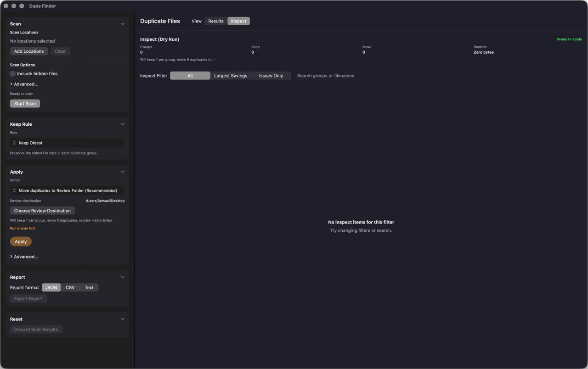

1) Scan
Add one or more folders/drives. SpringClean groups files by size, fingerprints, then verifies matches.
macOS utility • exact duplicates • safe by default
SpringClean finds exact duplicate files, shows you an Inspect (dry run) preview, then moves duplicates to a Review Folder by default.

Add one or more folders/drives. SpringClean groups files by size, fingerprints, then verifies matches.
See exactly what will be kept vs moved. Conflicts (like name collisions) are resolved safely.
Duplicates go to a Review Folder by default. You stay in control.
SpringClean removes only byte-for-byte duplicates (no fuzzy guessing).
Choose how keepers are picked (oldest/newest/largest, etc.). Always keeps at least one per group.
If moving duplicates into a single folder causes filename collisions, SpringClean auto-renames safely.
Clear messaging for read-only volumes and permissions, so you don’t get stuck mid-cleanup.
macOS • DMG installer
Latest build: SpringClean v0.1.0
If macOS warns about the app: right-click the app → Open. We’ll sign/notarize when you’re ready.
By default it moves duplicates into a Review Folder so you can verify before deleting anything permanently.
SpringClean uses an Inspect (dry run) step and only targets exact duplicates. It always keeps at least one file per group.
v1 focuses on exact duplicates. Similar-photo cleanup may be added later as an optional mode.
Yes. If a drive is read-only or disconnected, SpringClean will show a clear message before applying changes.